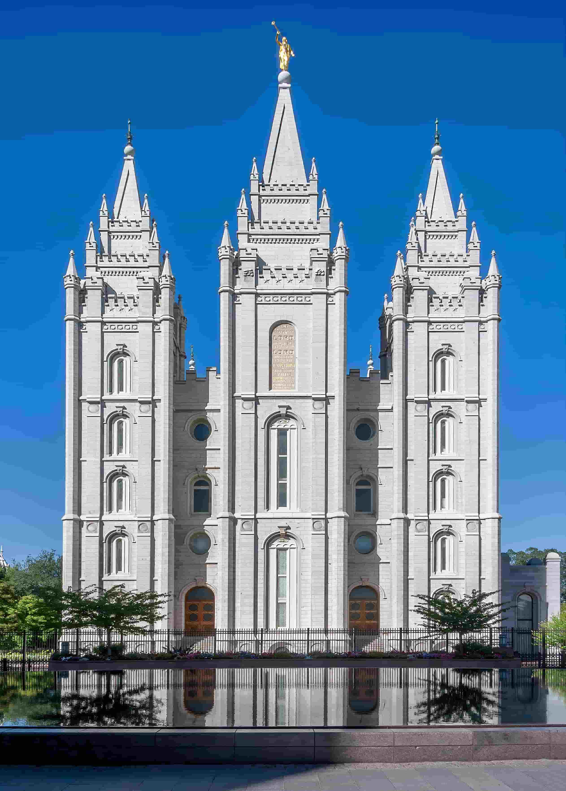
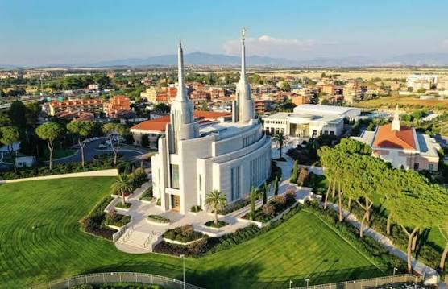
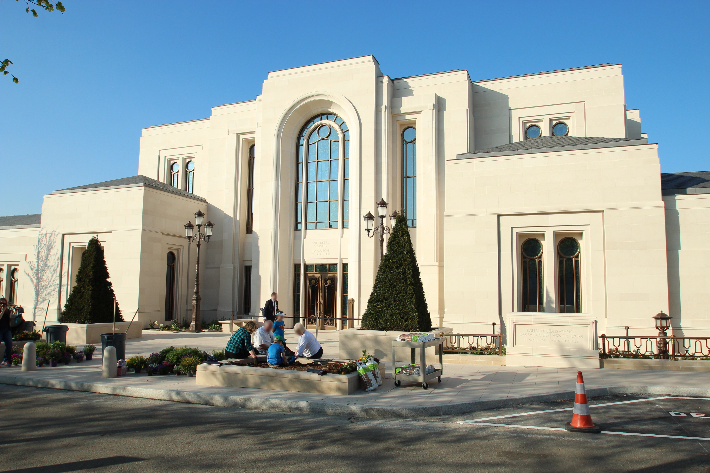

Temple Album
Home
Old
New
Large
Small
Temples Around the World

Salt Lake Temple
Manti Utah Temple

Rome Italy Temple
Buenos Aires Argentina Temple
Kirtland Ohio Temple
Laie Hawaii Temple

Paris France Temple